2 Gráficos avanzados (con ggplot2)
Funciones de R tales como plot, hist, barplot, boxplot y otras se apoyan en el motor gráfico tradicional de R, que es suficiente para esos fines. Sin embargo, se queda corto para construir otro tipo de gráficos más avanzados. Por eso, en 2001, Paul Murrell desarrolló un motor gráfico alternativo, grid que facilita la generación en R de varias capas y de Trellis (o pequeños múltiplos).
Los gráficos de Trellis permiten seguir el comportamiento de unas variables de interés a través de los distintos niveles de otras, disponiendo la información en una retícula que facilita el descubrimiento de patrones por inspección visual.
El gráfico siguiente muestra la evolución de la tasa de paro según la provincia y el sexo.
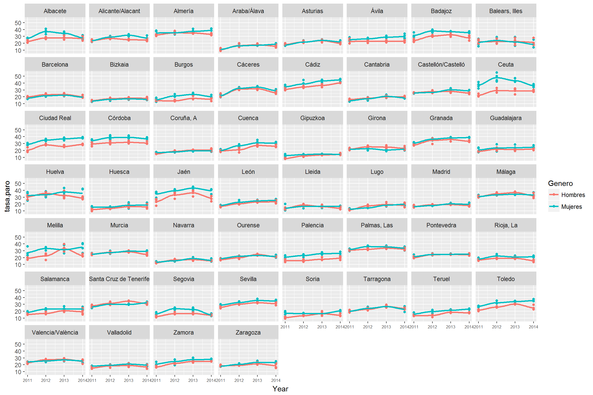
Hay muchas funciones y paquetes que crean gráficos apoyándose en el motor gráfico grid. El más popular. es ggplot2. Es una implementación de las ideas recogidas en el artículo de The Language of Graphics escrito por Leland Wilkinson y sus coautores en 2000. De este lenguaje, implementado en el paquete ggplot2, se ocupan las siguientes secciones.
2.1 Elementos de un gráfico en ggplot2
El grafico anterior, se obtuvo de la siguiente manera. En primer lugar, se carga el paquete ggplot2 y los datos del paro:
require(ggplot2) #carga el paquete ggplot2
paro <- read.csv("data/paro_final.csv",encoding="UTF-8") #carga los datos
head(paro)## Year Cuat tasa.paro Genero prov Provincias
## 1 2011 1 10.792350 Mujeres 1 Araba/Álava
## 2 2011 2 9.348442 Mujeres 1 Araba/Álava
## 3 2011 3 10.953058 Mujeres 1 Araba/Álava
## 4 2011 4 12.916667 Mujeres 1 Araba/Álava
## 5 2012 1 16.258993 Mujeres 1 Araba/Álava
## 6 2012 2 14.742698 Mujeres 1 Araba/ÁlavaLa expresión de ggplot2 para crear el gráfico anterior fue:
ggplot(paro) +
aes(x = Year, y = tasa.paro, col = Genero) +
geom_point() + geom_smooth(alpha = 0.5,se = FALSE) +
facet_wrap( ~ Provincias) Esta expresión combina varios elementos que discutiremos con detalle más adelante:
- Datos: siempre una tabla (data.frame)
- Estéticas: elementos representables gráficamente (la posición
xey, el color, …) en columnas del data.frame. - Geometrías (o capas): puntos, rectas, histogramas, densidades, etc. También se llaman capas porque pueden superponerse.
- Facetas: parten un gráfico en sublienzos preservando las escalas (pequeños múltiplos)
2.1.1 Datos
Uno de los elementos más importantes de un gráfico son los datos que se quieren representar. Una particularidad de ggplot2 es que solo acepta un tipo de datos: data.frames. Otras funciones gráficas (p.e., hist) admiten vectores, listas u otro tipo de estructuras. ggplot2 no.
Por otro lado, es preferible que los datos estén en un formato “largo” (long format), es decir, una columna para cada dimensión y una fila para cada observación.
p <- ggplot(iris)El código anterior crea un objeto, p que viene a ser un proto-gráfico: contiene los datos que vamos a utilizar, los del conjunto de datos iris. Obviamente, el código anterior es insuficiente para crear un gráfico: aún no hemos indicado qué queremos hacer con iris.
2.1.2 Estéticas (aes)
En un conjunto de datos hay columnas: edad, altura, ingresos, temperatura, etc. En un gráfico hay, en la terminología de ggplot2, aesthetic. Estéticas son, por ejemplo, la distancia horizontal o vertical, el color, la forma (de un punto), el tamaño (de un punto o el grosor de una línea), etc.
p <- p + aes(x = Petal.Length, y = Petal.Width, colour = Species)se están añadiendo a p información sobre las estéticas que tiene que utilizar y qué variables de iris tiene que utilizar:
- La distancia horizontal,
x, vendrá dada por la longitud del pétalo. - La distancia vertical,
y, por su anchura. - El color, por la especie.
Al protográfico se le han sumado las estéticas. En las secciones siguientes se le sumarán otros elementos adicionales. Lo importante es recordar cómo la suma es el signo que combina los elementos que componen el lenguaje de los gráficos.
De todos modos, es habitual combinar ambos pasos en una única expresión
p <- ggplot(iris, aes(x = Petal.Length, y = Petal.Width, colour = Species))El objeto p resultante aún no es un gráfico ni se puede representar. Le faltan capas, que es el objeto de la siguiente sección. No obstante, se puede inspeccionar así:
summary(p)## data: Sepal.Length, Sepal.Width, Petal.Length, Petal.Width,
## Species [150x5]
## mapping: x = Petal.Length, y = Petal.Width, colour = Species
## faceting: <ggproto object: Class FacetNull, Facet, gg>
## compute_layout: function
## draw_back: function
## draw_front: function
## draw_labels: function
## draw_panels: function
## finish_data: function
## init_scales: function
## map_data: function
## params: list
## setup_data: function
## setup_params: function
## shrink: TRUE
## train_scales: function
## vars: function
## super: <ggproto object: Class FacetNull, Facet, gg>Ahí están indicados los datos que va a utilizar y la relación (o mapeo) entre estéticas y columnas de los datos.
¿Cuántas estéticas existen? Alrededor de una docena, aunque se utilizan, generalmente, menos:
xey, distancias horizontal y vertical.colour, para el color.size, para el tamaño.shape, que indica la forma de los puntos (cuadrados, triángulos, etc.) de los puntos o del trazo (continuo, punteado) de las líneas.alphapara la transparencia: los valores más altos tendrían formas opacas y los más bajos, casi transparentes. También uuy útil para el solapamiento de puntos.fill, para el color de relleno de las formas sólidas (barras, etc.).
Hay que advertir que no todas las estéticas tienen la misma potencia en un gráfico. El ojo humano percibe fácilmente longitudes distintas. Pero tiene problemas para comparar áreas (que es lo que regula la estética size) o intensidades de color. Se recomienda usar las estéticas más potentes para representar las variables más importantes.
2.1.3 Capas (geoms)
Las capas (o geoms para ggplot2) son los verbos del lenguaje de los gráficos. Indican qué hacer con los datos y las estéticas elegidas, cómo representarlos en un lienzo:
p <- p + geom_point()
p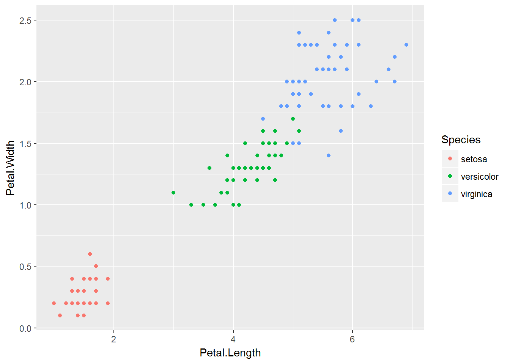
Una vez añadida una capa al gráfico, este puede pintarse (que es lo que ocurre al llamar a p). Se obtiene el mismo resultado haciendo, en una única línea,
ggplot(iris, aes(x = Petal.Length, y = Petal.Width, colour = Species)) + geom_point()Una característica de las capas, y de ahí su nombre, es que pueden superponerse. Por ejemplo,
ggplot(iris, aes(x = Petal.Length, y = Petal.Width, colour = Species)) +
geom_point() + geom_smooth()
añade al gráfico una curva suavizada (con sus intervalos de confianza en gris).
Existen muchos tipos de capas. Los más usuales son geom_point, geom_line, geom_histogram, geom_bar y geom_boxplot (ver las página http://docs.ggplot2.org/current/) para una lista actualizada.
Elaborar el siguientes gráfico sobre la evolución del paro en España. Utilizar la capa geom_jitter y la estética alpha para subsanar problemas de solapamiento.
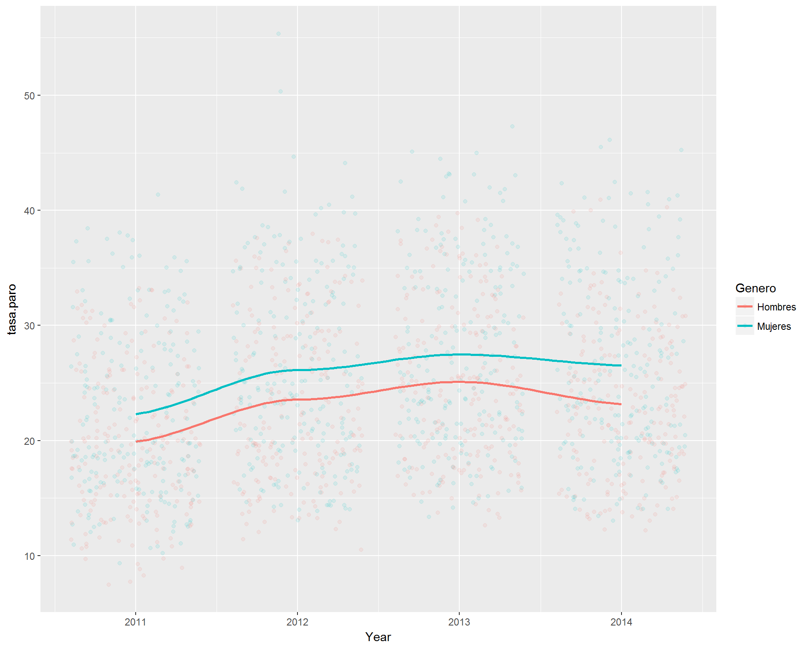
2.1.4 Facetas
Muchos de los gráficos anteriores pueden ser reproducidos sin mucho esfuerzo (exceptuando, tal vez, cuestiones de aspecto) usando los gráficos tradicionales de R, pero no los que usan facetas.
Las facetas implementan los gráficos de Trellis mencionados antes. Por ejemplo,
ggplot(iris, aes(x = Petal.Length, y = Petal.Width)) +
geom_point() + geom_smooth() +
facet_grid(~ Species)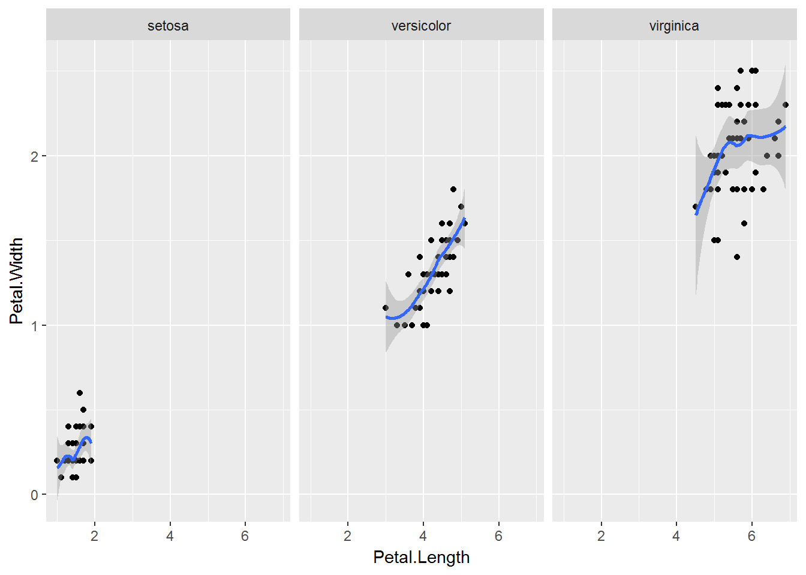
crea tres gráficos dispuestos horizontalmente que comparan la relación entre la anchura y la longitud del pétalo de las tres especies de iris. Una característica de estos gráficos, que es crítica para poder hacer comparaciones adecuadas, es que comparten ejes.
Los gráficos podrían disponerse verticalmente reemplazando facet_grid(~ Species) por facet_grid(Species ~ .) en el código anterior. Además, se puede subdividir el lienzo por dos (¡o más!) variables así:
paro$Cuat<-factor(paro$Cuat,levels=1:4,labels=c("I","II","III","IV"),ordered=TRUE) #cuatrimestre en notación romana
tmp <- subset(paro, Provincias %in% c("Zaragoza", "Huesca", "Teruel"))
ggplot(tmp, aes(x = Year, y = tasa.paro, color=Genero)) +
geom_point() + geom_line() +
facet_grid(Provincias~Cuat)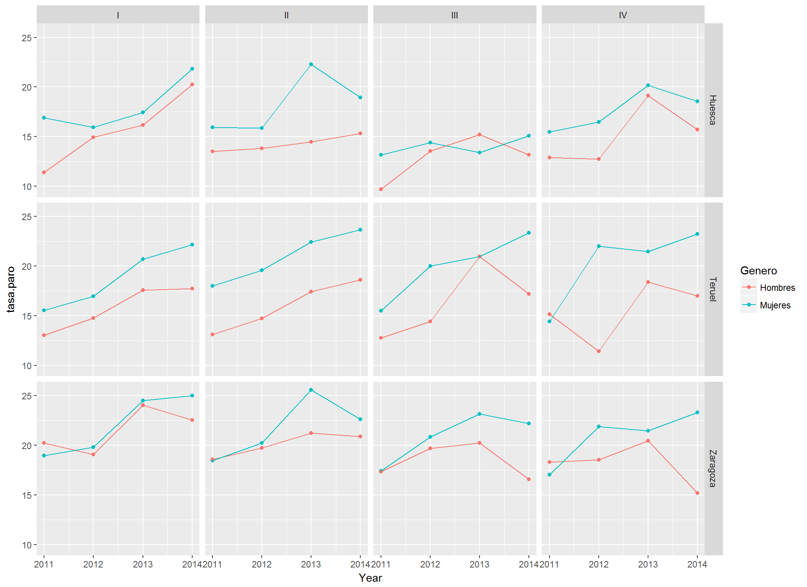
En caso de haber muchas categorías (p.e., provincia), puede usarse la función facet_wrap para distribuir las subgráficas en una cuadrícula.
Elaborar los siguientes gráfico sobre la distribución del paro en España.
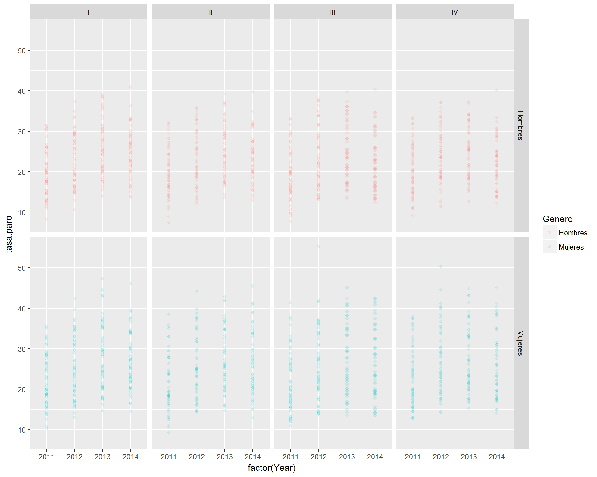
2.1.5 Toque final y exportación
2.1.5.1 Etiquetas
Las estéticas se pueden etiquetar con la función labs. Además, se le puede añadir un título al gráfico usando la función ggtitle. Por ejemplo, en el gráfico anterior se pueden reetiquetar los ejes y la leyenda haciendo
p <- p + ggtitle("Anchura y longitud de pétalos de tres especies de iris") +
labs(x = "Longitud",
y = "Anchura",
colour = "Especie")2.1.5.2 Temas
Los temas de ggplot2 permiten modificar aspectos estéticos del gráfico que no tienen que ver con los datos en sí. Eso incluye los ejes, etiquetas, colores de fondo, el tamaño de los márgenes, etc. No es habitual (y se desaconseja a los usuarios menos expertos) tener que alterar los temas que ggplot2 usa por defecto. Solo se vuelve necesario cuando los gráficos tienen que adecuarse a una imagen corporativa o atenerse a algún criterio de publicación exigente.
Un tema es una colección de elementos que indica el color, transparencia, etc. del lienzo sobre el que se representa el gráfico) modificables. El tema que usa ggplot2 por defecto es theme_grey. Al escribir theme_grey() en la consola de R, se muestran alrededor de cuarenta elementos modificables y sus atributos tal y como los define dicho tema.
¿Qué se puede hacer con los temas? Una primera opción es elegir otro. Por ejemplo, se puede reemplazar el habitual por otros disponibles en el paquete como theme_bw (o theme_classic) haciendo
p <- p + theme_bw()
p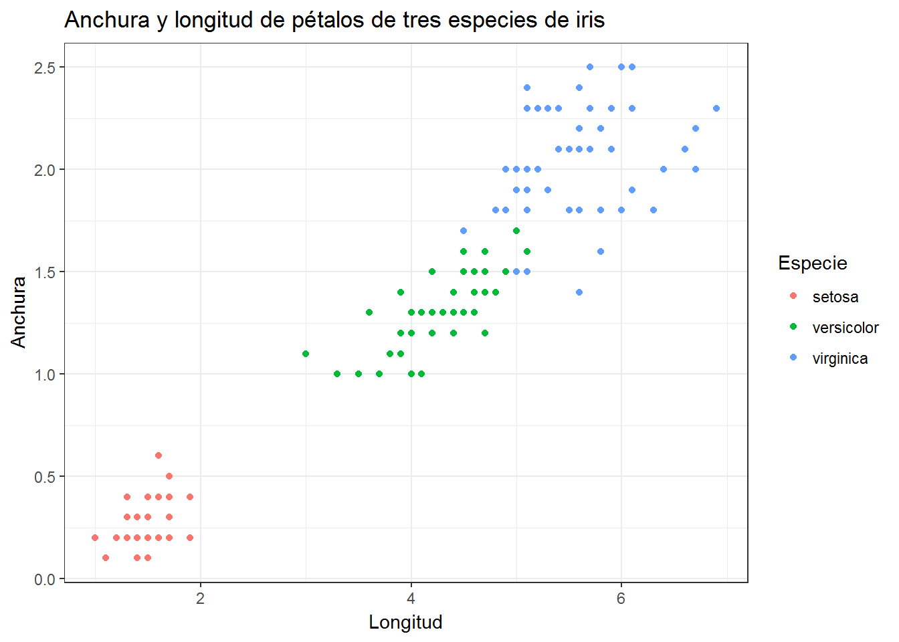
Es posible usar tanto los temas que incluye ggplot2 por defecto como otros creados por la comunidad. Algunos, por ejemplo, tratan de imitar el estilo de publicaciones reconocidas como The Economist o similares. Algunos están recogidos en paquetes como, por ejemplo, ggthemes.
Finalmente, es posible construir temas propios y personalizados. Aunque no es un proceso complicado, los detalles quedan fuera del alcance de esta introducción.
2.1.5.3 Exportación
Una vez creado un gráfico, es posible exportarlo a png, jpg, etc. La función ggsave guarda en un fichero el último gráfico generado con ggplot2. Lo hace, además, en el formato indicado en el nombre del fichero que se quiere generar. Así,
ggplot(iris, aes(x = Petal.Length, y = Petal.Width, colour = Species)) + geom_point()
ggsave("mi_grafico.png")guarda la figura creada en la primera línea en formato png en el fichero mi_grafico.png del directorio de trabajo
2.2 Introducción a ggmap
Con
ggplot2se puede también construir representaciones gráficas con información geográfica (puntos, segmentos, etc.): basta con que las estéticasxeyse correspondan con la longitud y la latitud de los datos.Lo que permite hacer
ggmapes, en esencia, añadir a los gráficos ya conocidos una capa cartográfica adicional. Para eso usa recursos disponibles en la web a través de APIs (de Google y otros).
Un ejemplo sencillo ilustra los usos de ggmap. En primer lugar, se carga (si se ha instalado previamente) el paquete:
library(ggmap)Existen varios proveedores que proporcionan APIs de geolocalización. Uno de ellos es Google: dado el nombre más o menos normalizado de un lugar, la API de Google devuelve sus coordenadas. Este servicio tiene una versión gratuita que permite realizar un determinado número de consultas diarias (2500 actualmente); para usos más intensivos, es necesario adquirir una licencia.
La función geocode encapsula la consulta a dicha API y devuelve un objeto (un data.frame) que contiene las coordenadas del lugar de interés:
#kschool <- geocode('Calle Magallanes 1, madrid, spain')
kschool<-c(lon=-3.705416,lat= 40.43242)La función get_map consulta otro servicio de información cartográfica (GoogleMaps en el ejemplo siguiente) y descarga un mapa (que es, esencialmente, una imagen raster).
mapa <- get_map(location = kschool,zoom = 16,color = "bw")
#mapa<- get_map(location = kschool,zoom = 16, source = "stamen", maptype = "watercolor")
#mapa<- get_map(location = kschool,zoom = 16, source = "stamen", maptype = "toner")Es obvio que para poder invocar las dos funciones anteriores hace falta una conexión a internet. Sin embargo, el resto de las operaciones que se van a realizar se ejecutan localmente.
Se puede, por ejemplo, representar el mapa directamente (con la función ggmap):
ggmap(mapa)O bien se puede marcar sobre él puntos de interés:
require(data.table)
# localización de los bares con terrazas de Madrid
# https://www.datanalytics.com/2017/03/02/todas-las-terrazas-de-madrid/
terrazas=fread("data/terrazas.csv")
ggmap(mapa) + geom_point(aes(x = lon, y = lat), data = terrazas, colour = 'orange3',size = 3,alpha=.5)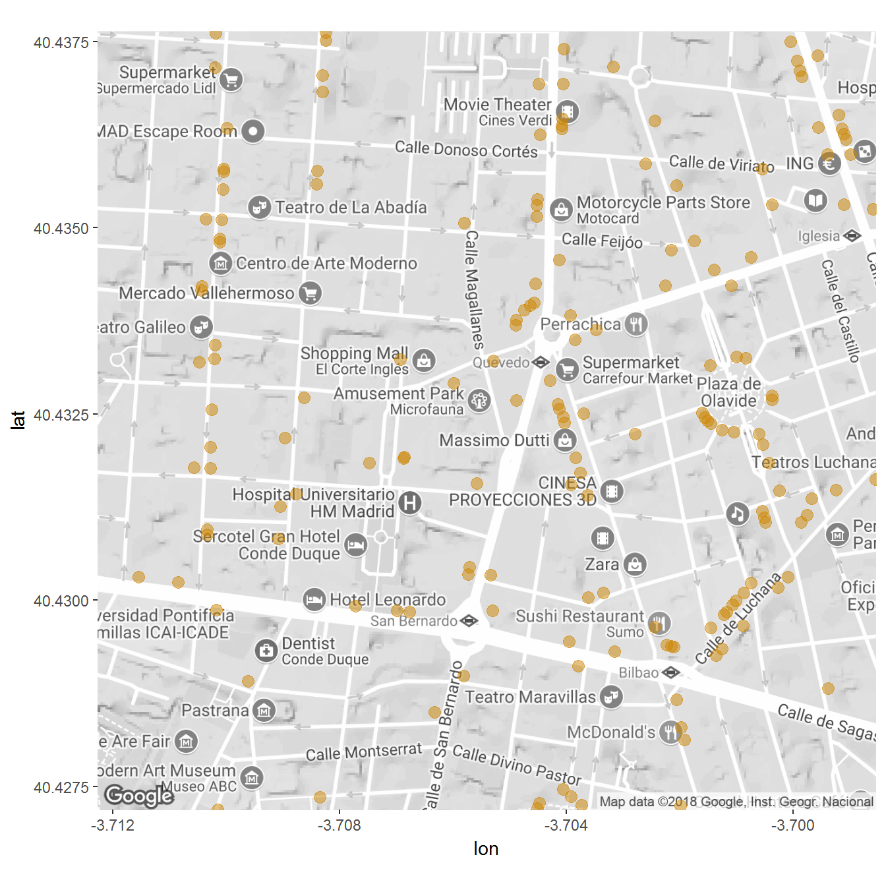
Como puede apreciarse, la sintaxis es similar a la de ggplot2. Una diferencia notables que, ahora, los datos se pasan en la capa, es decir, en este caso, en la función geom_point.
2.2.1 Más ejemplos de mapas con puntos
En los ejemplos que siguen se va a utilizar el conjunto de datos crimes que forma parte del paquete ggmap y que incluye información geolocalizada de crímenes cometidos en la ciudad de Houston. En realidad, solo consideraremos los crímenes serios, es decir,
crimes.houston <- subset(crime, ! crime$offense %in% c("auto theft", "theft", "burglary"))El tipo de mapas más simples son los que se limitan a representar puntos sobre una capa cartográfica.
#houston<-geocode('houston')
houston<-c(lon=-95.3698,lat= 29.76043)
HoustonMap <- ggmap(get_map(houston, zoom = 14, color = "bw"))
HoustonMap +
geom_point(aes(x = lon, y = lat, colour = offense), data = crimes.houston, size = 1)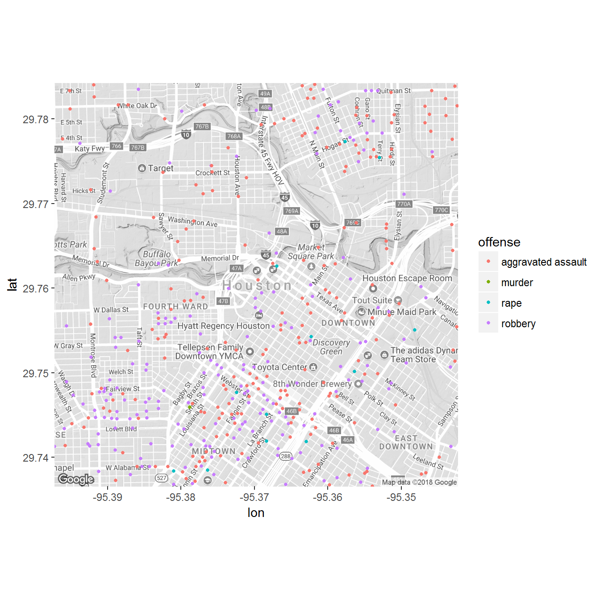
Los mecanismos conocidos de ggplot2, como las facetas, están disponibles en ggmap. Descomponer el anterior gráfico utilizando facet_wrap por tipo de crimen (ver grafico siguiente). Hacer lo mismo con el día de la semana.
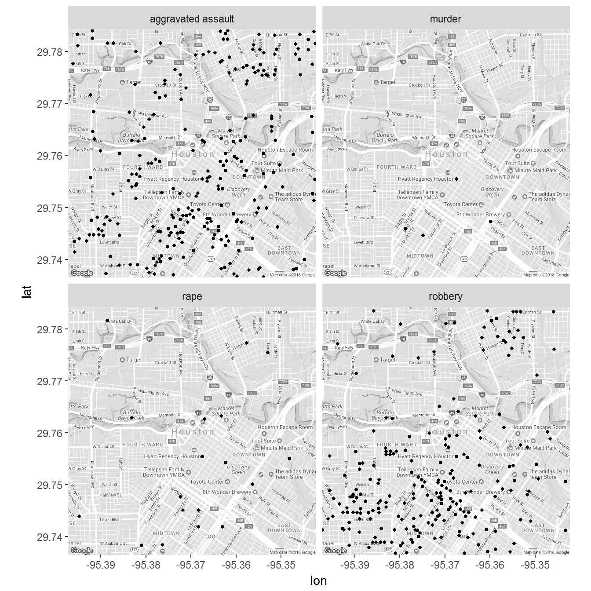
Pintar las gasolineras en el mapa de España (o de una provincia o un municipio) utilizando el fichero data/carburantes.csv. Modificar el tamaño (o color) de los puntos en función de, por ejemplo, el precio de los carburantes.
2.2.2 Más allá de los puntos: densidades y poligonos
Además de geom_point, también están disponibles otros tipos de capas de ggplot2, como stat_bin2d, que cuenta el número de eventos (aqui atracos) que suceden en regiones cuadradas de un tamaño predefinido. Se puede también utilizar stat_density2d, que representa intensidades, para identificar las zonas de mayor criminalidad.
HoustonMap +
stat_density2d(aes(x = lon, y = lat, alpha = ..level..),fill="red4",
size = 2, data = subset(crimes.houston,offense=="robbery"),
geom = "polygon"
)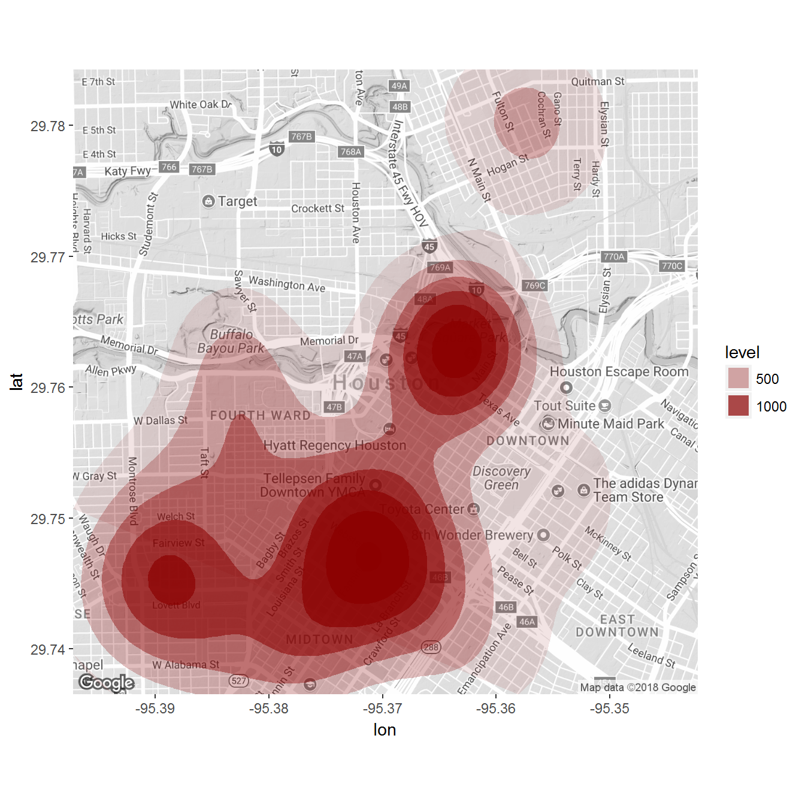
Por otra parte, la información estadística puede ser proporcionada de manera agregada en unidades espaciales (a nivel provincial, municipal, …), como para los datos del paro.
Lo primero que se necesita para representar estar datos, es el conjunto de poligonos (o “shape”) que definen las secciones geograficas. Esta información se puede por ejemplo descargar desde el servidor GADMmediante el paquete raster:
require(raster)
tmp <- getData("GADM", country= "Spain", level = 2) #mapa administrativo a nivel provincial
head(tmp)## OBJECTID ID_0 ISO NAME_0 ID_1 NAME_1 ID_2 NAME_2 HASC_2 CCN_2
## 1 1 215 ESP Spain 1 Andalucía 1 Almería ES.AN.AM NA
## 2 2 215 ESP Spain 1 Andalucía 2 Cádiz ES.AN.CD NA
## 3 3 215 ESP Spain 1 Andalucía 3 Córdoba ES.AN.CO NA
## 4 4 215 ESP Spain 1 Andalucía 4 Granada ES.AN.GD NA
## 5 5 215 ESP Spain 1 Andalucía 5 Huelva ES.AN.HL NA
## 6 6 215 ESP Spain 1 Andalucía 6 Jaén ES.AN.JA NA
## CCA_2 TYPE_2 ENGTYPE_2 NL_NAME_2 VARNAME_2
## 1 04 Provincia Province
## 2 11 Provincia Province
## 3 14 Provincia Province
## 4 18 Provincia Province
## 5 21 Provincia Province
## 6 23 Provincia ProvinceSe puede representar este mapa mediante el comando plot
plot(tmp)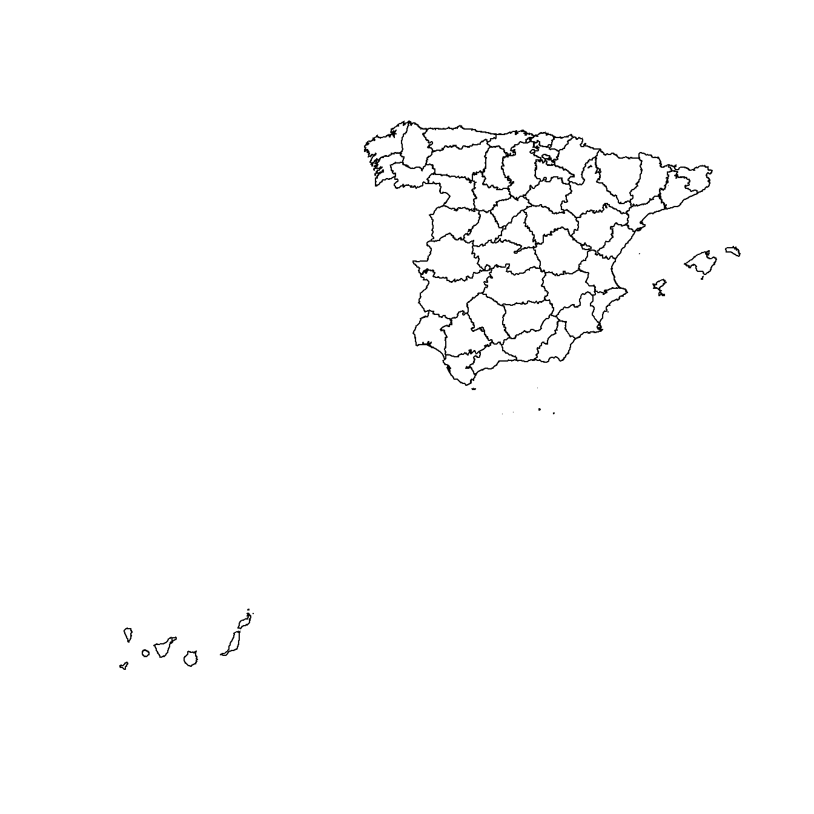
o utilizando el paquete ggplot2:
require(ggplot2)
require(maptools)
tmp=subset(tmp,!CCA_2=="")
provincias=unionSpatialPolygons(tmp,tmp$CCA_2) #sintetiza el mapa
mapa=fortify(provincias)
ggplot() + geom_polygon(data = mapa, aes(long, lat, group = group),
fill="grey60",colour = "grey80", size = .1)
Ahora pintamos en el mapa los datos del paro (Mujeres, 2011, cuatr. I):
Paro=subset(paro,Year==2011 & Cuat=="I")
Paro$id=sub(" ","0",format(Paro$prov,width=2))
Mapa=merge(mapa,Paro,by="id")
peninsula=subset(Mapa,!id %in% c(35,38)) #sin canarias
ggplot() + geom_polygon(data = peninsula, aes(long, lat, group = group,fill=tasa.paro), colour = "grey80", size = .1) +
facet_grid(~ Genero) + scale_fill_gradient(low="aliceblue",high="steelblue4")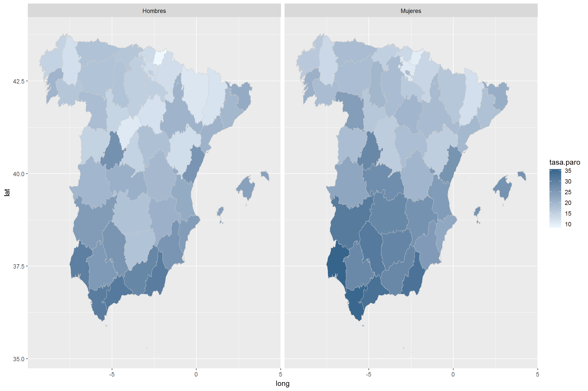
Podemos incluso dibjar este mapa, sobre un lienzo obtenido mediante get_map:
require(ggmap)
centro <- c(lon=-3.70379,lat= 40.41678) #geocode("Madrid, Spain")
mapa <- get_map(centro, zoom = 6,maptype="toner-lite",source="stamen")
mujeres=subset(Mapa,Genero="Mujeres")
ggmap(mapa) + geom_polygon(data = mujeres, aes(long, lat, group = group,fill=tasa.paro),alpha=.5) +
scale_fill_gradient(low="aliceblue",high="steelblue4")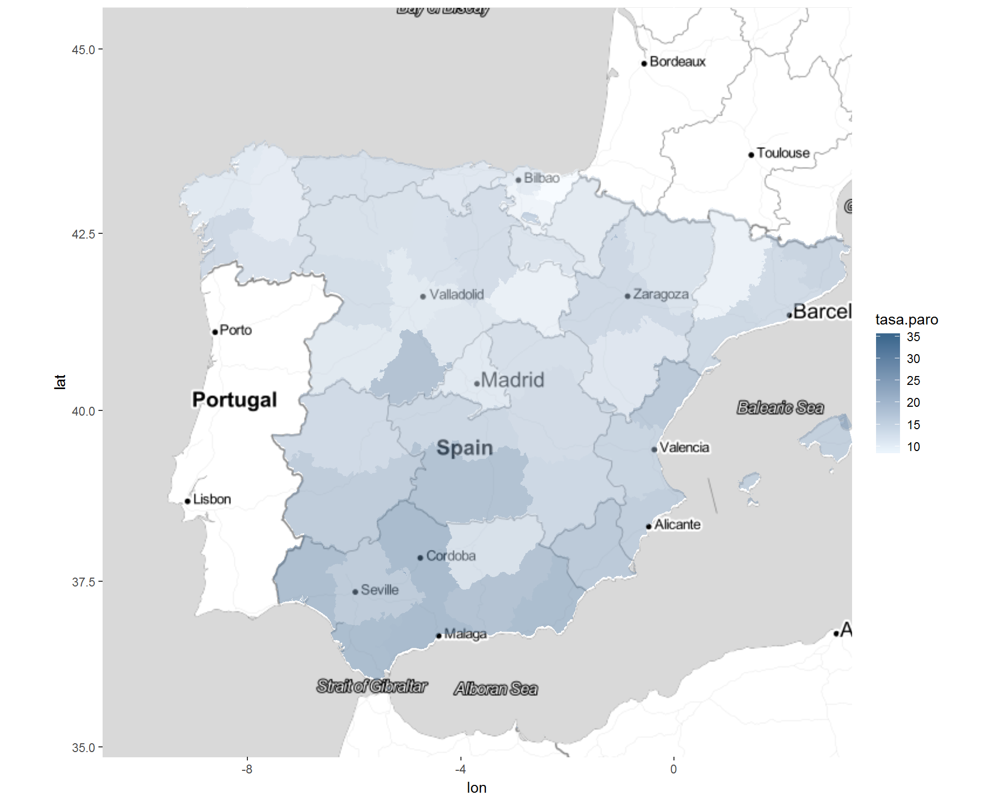
2.3 Extensión dinamica de los graficos
Existen varios paquetes que permiten una visualización dinamica de los graficos. Aqui veremos brevemente dos de ellos : ‘plotly’ y ‘leaflet’.
El primero permite con una unica función (ggplotly()) convertir un gráfico elaborado con ggplot en un gráfico donde los ejes, el zoom, las etiquetas, etc., pueden ser modificados con el ratón:
require(plotly)
p<-ggplot(paro, aes(x = Year, y = tasa.paro, color=Genero,label=Provincias)) +
geom_jitter(alpha=.1) + geom_smooth(se=FALSE)
ggplotly(p,tooltip = c("label", "color"))Con leafletse puede cambiar la resolución del lienzo:
require(leaflet)
DT<-data.frame(id=names(provincias),row.names=names(provincias))
espana<-SpatialPolygonsDataFrame(provincias,DT)
espana@data=merge(espana@data,subset(Paro,Genero=="Mujeres"),by="id")
rownames(espana@data)<-espana$id
bins <- quantile(espana$tasa.paro,seq(0,1,.2))
pal <- colorBin("YlOrRd", domain = espana$tasa.paro , bins = bins) #escala de colores
espana$color<-pal(espana$tasa.paro)
leaflet(data=espana)%>%
addProviderTiles("CartoDB.Positron") %>%
addPolygons(fillOpacity = 0.5,
fillColor = ~color,color = "white",weight = 1,dashArray = "3") %>%
addLegend(pal = pal, values = ~tasa.paro, opacity = 0.7, title = "tasa de paro",
position = "bottomright",labFormat = labelFormat(digits=2))